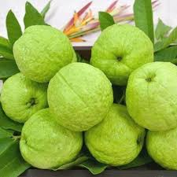
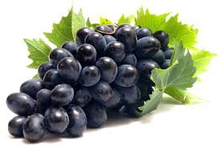
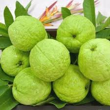
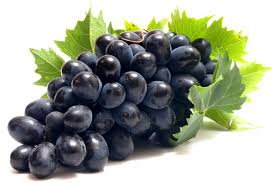
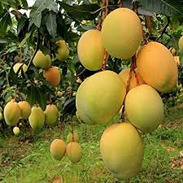

Mango
Mango Facts
Botanically, mango is a drupe, consisting of an outer skin, a fleshy edible portion, and a central stone enclosing a single seed – also called stone fruit, like a plum, cherry or peach. Where do mangos come from? Mangos were first grown in India over 5,000 years ago. Mango seeds traveled with humans from Asia to the Middle East, East Africa and South America beginning around 300 or 400 A.D. The paisley pattern, developed in India, is based on the shape of a mango. A basket of mangos is considered a gesture of friendship in India. The mango is a symbol of love in India.
Kiwi
Kiwi information

Kiwi, once called the Chinese gooseberry, is a small fruit with significant nutritional benefits. Native to the hillsides of Southwest China, kiwi is now a popular fruit grown in many areas of the world. It earned its name from New Zealand fruit exporters, who named it after the flightless kiwi bird based on similarities in appearance. There are several kiwi species, but the two most commonly consumed are known under the scientific names Actinidia deliciosa and Actinidia chinensis. The Actinidia deliciosa species is the typical green kiwi often seen in stores. However, no matter the type, kiwis offer many evidence-based health benefits. They are rich in vitamin C and can support digestive, heart, and eye health, among other health benefits.